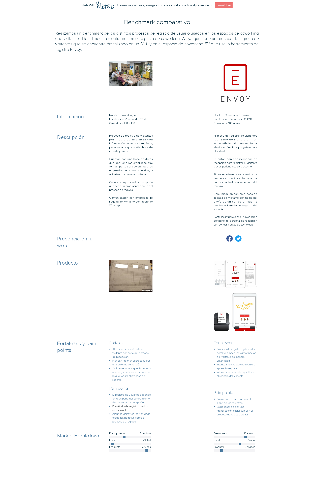

üëãüèºOlá. Registro de usuarios para espacio de coworking

Demo y datos para iniciar sesión
Demo del proyecto desarrollado
Correo electrónico: admin@terminal1.com
Contraseña: 123456
üìã Contexto
Actualmente operan cerca de 74 espacios de coworking en México, han ganado la preferencia de los emprendedores ya que les permite hacer negocios de manera más eficiente y representa una opción más accesible económicamente. Esto ha detonado una expansión acelerada de espacios de coworking en México durante los últimos dos años.
De acuerdo con un estudio realizado por la consultora internacional HOK, México es el sexto mercado en desarrollo más importante en cuanto al crecimiento de espacios de coworking se refiere, al superar a países como Francia e Italia, pero por debajo de Brasil e India.
Se calcula que a nivel mundial este negocio tiene un valor de casi 15 mil millones de dólares, por lo que la oportunidad para esta industria es enorme. Las micro empresas mexicanas suman 3.9 millones y representan 97% del ecosistema en México, de acuerdo con el Instituto Nacional de Estadística y Geografía (INEGI).
❌ El problema
- Nuesto equipo fue encomendado con la tarea de crear un registro de usuarios diseñado para un espacio de coworking.
- Tiempo disponible: 1 semana.
üéØ Conocimiento y delimitaci√≥n del problema
Decidimos dirigimos a 4 espacios distintos, con la intención de conocer los problemas específicos que se encuentran en la experiencia de ingreso a un coworking en la Ciudad de México.
Para tener un mejor entendimiento del proceso de registro existente y los usuarios que realizan este proceso visitamos los espacios de coworking que describimos a continuación, en los cuales llevamos a cabo entrevistas con el personal de recepción de cada espacio.
Por motivos de seguridad decidimos sustituir los nombres de los coworkings visitados por letras "A,B,C,D" para así mantener la confidencialidad. De igual manera tomamos la decisión de guardar los audios citados, transcripciones y fotografías de cada visita en Google Drive, por lo que, para poder escucharlos pedimos que soliciten hacerlo por ese medio.
üìÑ Gu√≠a de entrevista
Antes de nuestras visitas a los distintos coworks elaboramos una guía de entrevista:
- ¿Cómo es el proceso de ingreso al coworking?
- ¿Quiénes están involucrados?
- ¿Cuál es el proceso para empleados/colaboradores y para visitantes?
- ¿Qué cambios le harías al proceso que llevan a cabo en la actualidad?
- Problemas con los que se encuentran durante el proceso de registro.
- ¿Alguna empresa pide algún otro requisito para poder ingresar a su espacio?
- ¿Has recibido comentarios sobre el proceso de ingreso?
- En caso de contar con un registro digital ¿cuál es su interfaz? ¿cuál es el user flow?
- Edad promedio de los visitantes.
- Número promedio de visitantes
üíÅ Verbalizaciones obtenidas coworking "A":
- “Tenemos una agenda, una lista en la que ya tenemos a los clientes frecuentes y dependiendo de esa lista uno ya con el tiempo lo va ubicando, y cuando son empresas nuevas se les pide su registro y nada más cuando vayan llegando se les pide su hora de entrada, su hora de salida, para tener un control sobre las personas y los que se encuentran en un cowork en el edificio.”
- “Cuando ya se tiene una noción de quiénes son las personas que entran al edificio ya no es tan necesario [refiriéndose a la hoja de registro en el área de recepción], pero de mi parte sí es necesario ubicarlos para tener el control del edificio.”
- “Cuando yo entré no conocía a todas las empresas, al principio sí se me hizo muy complicado y obviamente los empiezas a ubicar (...)”
- [Sobre tener una tableta en recepción con un software que le permita a las personas hacer su registro de ingreso] “Yo considero que no sería tanto trabajo para mí, sería más sencillo, pero sería más...no sería necesario mi trabajo ¿no crees?”
- “Yo cambiaría a lo mejor darles identificaciones, donde vengan empresas, nombre y a lo mejor un número para tener un registro más elaborado, creo que sería lo único.”
- [Sobre cómo identificar a los visitantes] “No les pedimos identificación, ya posteriormente cambiándonos de edificio lo más probable es que sí se comience a pedir identificación, más que nada para tener el control porque sería un piso más grande, entonces entrarían aún más personas.”
- [Sobre cómo comunican si un visitante puede ingresar al edificio o no] “Es por grupos, todo es por grupos de Whatsapp, obviamente entre empresas ya es diferente la comunicación, porque es con Whatsapp Bussiness (...) De mí a otras empresas sí es por Whatsapp o correos.”
- [Sobre un sistema de ingreso ideal] “A mi me gustaría que fuera como en las escuelas supongamos, ves que te dan tu credencial, la pasas, ya tienes como vino a tal hora, tal día, y ya, pero bueno pasa lo mismo, sería como mínimo mi trabajo que yo haría. Sería como mejor, pero unas por otras.”
üëÇ Insights obtenidas coworking "A":
- El proceso de ingreso no se encuentra totalmente digitalizado.
- El cowork está en proceso de expansión, al tener un espacio mayor con más visitantes notan que el método de ingreso es un área de mejora.
- El factor humano es un valor que este coworking aprecia como parte de la experiencia de ingreso de sus visitantes.
- En caso de cambio de personal el proceso de cambio podría ser complicado al inicio, ya que el proceso de ingreso y registro no se encuentra digitalizado y aun dependen mucho del conocimiento personal del área de recepción.
- Están abiertos a la digitalización del proceso, mientras se conserve el factor humano en el proceso de registro.
üë® Sobre la entrevista con el coworking "B":
Durante la entrevista, la encargada me comentó que les era muy importante que hubiera personas que recibieran a la gente en la puerta, que uno de los mayores valores que ofrecen como coworking es la seguridad de las personas que trabajan en él y eso lo hacen notar desde el proceso de registro con la atención del personal de recepción. Me comentó que trabajan con Envoy, hace unos meses que han comenzado a usarlo, pero el cambio aún no es definitivo como lo es en otras sucursales, donde toman fotografía de los visitantes y entregan credenciales que pasan por un torniquete al entrar y salir. Será en octubre, cuando Laboratoria ocupe uno de los pisos que habrán implementado Envoy y el sistema de torniquetes ya que, como me comentó, la entrada y salida de personas será mayor y tendrán que tener un mayor control.
üëÇ Insights obtenidas coworking "B":
- El coworking valora la seguridad que ofrece a sus colaboradores, por lo que contar con personal de seguridad en la entrada es primordial, aunque su proceso de registro esté, en su mayor parte, digitalizado.
- Envoy les ha resultado muy útil ya que la mayor parte del proceso se realiza de manera automática, pero están abiertos a conocer nuevas opciones, especialmente si provienen de desarrolladoras de Laboratoria.
- El personal de recepción es quien hace uso de la herramienta de registro, no reciben capacitación alguna y quisieran poder conocer más sobre el proceso.
- Al personal de recepción puede parecerle complicado el manejo de esta herramienta, dependiendo del nivel de conocimiento tecnológico que posean.
üë® Sobre la entrevista con el coworking "C":
- Requerimientos de registro para los usuarios colaboradores del coworking: Ninguno, dado que son colaboradores entran de manera directa.
- Edad promedio de los usuarios: Entre 25 a 45 años.
- Número aproximado de visitas por día: Más de 25 visitas.
- Requerimientos de registro para los visitantes: Deben registrarse en un libro de visitas, ingresando los siguientes datos: fecha de entrada, nombre completo, a quién se visita, asunto de la visita, hora de entrada y hora de salida. También se le solicita una credencial de elector, de la cual se verifica que el nombre y la foto corresponda con los del usuario que se está registrando. Después de que el usuario se registra se le anuncia a la persona visitada que su visita llegó, para que salga al área de recepción a recibirle. Existen casos en los que no se deja entrar a alguna visita, como cuando la persona a quien se visita (o su empresa) confirma que no conoce a la visita y por lo tanto no puede recibirla.
üëÇ Insights obtenidas coworking "C":
- El proceso de registro de usuario no está digitalizado.
- El personal de recepción no se limita a esta área, por lo que también llevan a cabo tareas en otras áreas del coworking.
- El personal de recepción identifica la necesidad de digitalizar y modernizar el proceso de registro, creen que daría una mejor imagen al coworking, ya que otros espacios cuentan con este servicio.
- Este coworking valora el factor humano, ya que les parece primordial para brindar más seguridad a sus clientes.
üíÅ Sobre la entrevista con el coworking "D":
- Sus usuarios son jóvenes entre los 24 y 35 años.
- El proceso de registro toma un minuto, no solicitan identificación y la información que solicitan en su formato es el nombre y el horario de entrada y salida.
- Es el coworking más pequeño de los que visitamos, su proceso no se encuentra digitalizado.
üëÇ Insights obtenidas coworking "D":
- El proceso de registro es percibido por el personal de recepción como tedioso y obsoleto. La información que se escribe en el libro de registro se lleva a un Excel para procesarla. Por lo que implica más trabajo con los mismos datos.
- Desean automatizar el proceso para poder ligarlo con otros aspectos como el cobro del espacio de acuerdo al tiempo de uso por cliente.
- No cuentan con los filtros de seguridad que encontramos en otros espacios, el acceso fue más sencillo y tomó menos tiempo.
üìâ Benchmark


üë©üë® Personas
El acercamiento por medio de entrevistas a los diferentes espacios de coworking nos llevo a generar las personas que presentamos. Las tuvimos en mente al generar nuestra propuesta de solución.
Creemos que el coworking se centra en la creación de un espacio que fomente la colaboración, el compartir conocimientos, la innovación y la experiencia de usuario.
üë©üë® Actores involucrados en el proyecto
Cliente
- Recepcionista.
- Administrador(a) del coworking.
Equipo Scrum:
- Equipo de UX.
- Equipo de desarrollo.
En todas las historias de usuario (HU) participa el equipo scrum en su completud ya que cada HU tiene tareas de UX y desarrollo, sin embargo como este es el product backlog no se incluyen las tareas (que serían incluidas en el sprint backlog una vez estimadas y priorizadas)
üìà Motivaciones para este proyecto por parte del cliente
- Como recepcionista quiero agilizar el proceso de registro de los usuarios para ofrecer una mejor experiencia a nuestros visitantes.
- Como administrador del coworking quiero saber quienes han visitado el coworking para llevar un control y dar mayor seguridad a nuestros miembros.
- Como administrador del coworking quiero llevar un registro de los miembros del coworking para llevar un control y dar mayor seguridad a nuestros miembros.
Iniciativas
- INIT01 - Registro de usuarios VISITANTES en la plataforma digital de “registro de usuarios”.
- INIT02- Registro de usuarios MIEMBROS en la plataforma digital de “registro de usuarios”.
⚡️ Epics
- EP01(de la -INIT01) Yo como RECEPCIONISTA del coworking debo poder INGRESAR los datos del visitante en la plataforma digital de “registro de usuarios”.
- EP02(de la -INIT01) Yo como RECEPCIONISTA del coworking debo poder CONSULTAR los datos del visitante en la plataforma digital de “registro de usuarios”.
- EP03(de la -INIT01) Yo como ADMINISTRADOR del coworking debo poder CONSULTAR los datos del visitante en la plataforma digital de “registro de usuarios”.
- EP04(de la -INIT02) Yo como ADMINISTRADOR del coworking debo poder INGRESAR los datos de los miembros del coworking en la plataforma digital de “registro de usuarios”.
- EP05(de la -INIT02) Yo como ADMINISTRADOR del coworking debo poder CONSULTAR los datos de los miembros del coworking en la plataforma digital de “registro de usuarios”.
- EP06(de la -INIT02) Yo como ADMINISTRADOR del coworking debo poder ELIMINAR los datos de los miembros del coworking en la plataforma digital de “registro de usuarios”.

üìë Historias de usuario
- HU01 (de la EP01)- Yo como RECEPCIONISTA del coworking debo poder ACCEDER a la plataforma digital de “registro de usuarios” con usuario y contraseña para realizar el registro del visitante.
- HU02 (de la EP01)- Yo como RECEPCIONISTA del coworking debo poder INGRESAR los datos del visitante (nombre, empresa que visita, hora de entrada) en un formulario de la plataforma digital de “registro de usuarios” para iniciar el registro del visitante previo a su ingreso.
- HU03 (de la EP01)- Yo como RECEPCIONISTA del coworking debo poder CAPTURAR una foto del visitante, que muestre su rostro de manera descubireta, con la herramienta de toma de fotografía de la plataforma digital de “registro de usuarios” para continuar el registro del visitante previo a su ingreso.
- HU04 (de la EP01)- Yo como RECEPCIONISTA del coworking debo poder VISUALIZAR un resumen de los datos ingresados del visitante en la plataforma digital de “registro de usuarios” para concluir el registro del visitante previo a su ingreso.
- HU05 (de la EP01)- Yo como RECEPCIONISTA del coworking debo poder INGRESAR la hora de salida del visitante en la base de datos de la plataforma digital de “registro de usuarios” para finalizar el registro del visitante posterior a su ingreso.
- HU06 (de la EP02)- Yo como RECEPCIONISTA del coworking debo poder ACCEDER a la plataforma digital de “registro de usuarios” con usuario y contraseña para CONSULTAR el registro del visitante.
- HU07 (de la EP02)- Yo como RECEPCIONISTA del coworking debo poder VISUALIZAR una lista de los visitantes (con sus respectivos datos: nombre, empresa que visita, hora de entrada y hora de salida) registrados en la plataforma digital de “registro de usuarios” para llevar un control.
- HU08 (de la EP03)- Yo como ADMINISTRADOR del coworking debo poder ACCEDER a la plataforma digital de “registro de usuarios” con usuario y contraseña para CONSULTAR el registro del visitante.
- HU09 (de la EP03)- Yo como ADMINISTRADOR del coworking debo poder VISUALIZAR una lista de los visitantes (con sus respectivos datos: nombre, empresa que visita, hora de entrada y hora de salida ) registrados en la plataforma digital de “registro de usuarios” para llevar un control.
- HU010(de la -EP04)- Yo como ADMINISTRADOR del coworking debo poder ACCEDER a la plataforma digital de “registro de usuarios” con usuario y contraseña para INGRESAR los datos de los miembros del coworking.
- HU11(de la -EP04)- Yo como ADMINISTRADOR del coworking debo poder INGRESAR los datos del los miembros del coworking ( nombre del miembro, nombre de su empresa, mail) en un formulario de la plataforma digital de “registro de usuarios” para realizar el registro del miembro.
- HU12(de la -EP05)- Yo como ADMINISTRADOR del coworking debo poder ACCEDER a la plataforma digital de “registro de usuarios” con usuario y contraseña para CONSULTAR los datos de los miembros del coworking.
- HU013 (de la EP05)- Yo como ADMINISTRADOR del coworking debo poder VISUALIZAR una lista de los miembros del coworking (con sus respectivos datos: nombre, empresa a la que pertenece, mail ) registrados en la plataforma digital de “registro de usuarios” para llevar un control.
- HU14(de la -EP06)- Yo como ADMINISTRADOR del coworking debo poder ACCEDER a la plataforma digital de “registro de usuarios” con usuario y contraseña para CONSULTAR los datos de los miembros del coworking.
- HU015 (de la EP06)- Yo como ADMINISTRADOR del coworking debo poder ELIMINAR los datos del los miembros ( nombre del miembro, nombre de su empresa, mail) de la lista de los miembros del coworking registrados en la plataforma digital de “registro de usuarios” para llevar un control.
✔️ Definición de hecho (o terminado)
- Asegurar una correcta ortografía en todas las pantallas.
- Asegurar una redacción sencilla y sin ambigüedades.
- Asegurar que el trabajo de todos los miembros del equipo está totalmente integrado en cada iteración.
- Asegurar la correcta visualización del sitio web en el navegador Chrome.
- Asegurar el correcto funcionamiento del sitio web en el navegador Chrome.
- Asegurar la correcta visualización del sitio web en desktop.
üé® Proceso de dise√±o


✏️ Wireframes
üì± Prototipo de baja fidelidad
üë≠ üíª User testing
Llevamos a cabo 5 pruebas de usuario para testear el flujo de usuario de "Olá" y conocer los touch points y los games points que podría generar la plataforma. Realizamos las pruebas con usuarias de los 25 a los 37 años, estas fueron algunas de las observaciones obtenidas:
- "Necesitan agrandar la letra, es muy poco legible en el Ipad"
- "No me queda claro qué voy a registrar en la parte de Administración"
- "¿Cómo puedo hacer logout en el área de administración?"
- El flujo en el llenado del formulario de registro se detenía por varios segundo ante el input de "Empresa"
- "No me quedaba claro qué debía poner en la primera "Empresa"
- "Me parece que es una plataforma diseñada para que alguien más sea quien registre a las personas, para que sea más ágil porque ya conoce qué va en cada campo y así tome menos tiempo"
- "No puedo leer la letra" [versión responsive]
- "En la barra de Administración es necesario identificar en qué apartado estás, porque no lo señala"
- "Estaría bien un botón de atrás en la parte de la Administración"
- Me confunde que haya dos partes de registro, podrían cambiarle el nombre a la de los visitantes"
- "Algo muy útil para un cowork es saber la hora de salida de los visitantes, me parece importante que lo agreguen"
- "El menú de la parte de Administración debe ser más detallado, no sé de qué trata cada parte antes de abrirla, sólo la abrí por curiosidad"
- "Como cowork el que nos proporcionen su correo es poco útil"
- "El poder tener la foto del visitante es super importante, eso me gusta"
- "Yo entiendo que los trabajadores del coworking son el recepcionista y así, lo que registras son los miembros del coworking"
Tomamos en cuenta las observaciones compartidas y las aplicamos en la mejora de nuestra plataforma, lo cual seguiremos haciendo para nuestro siguiente alcance.